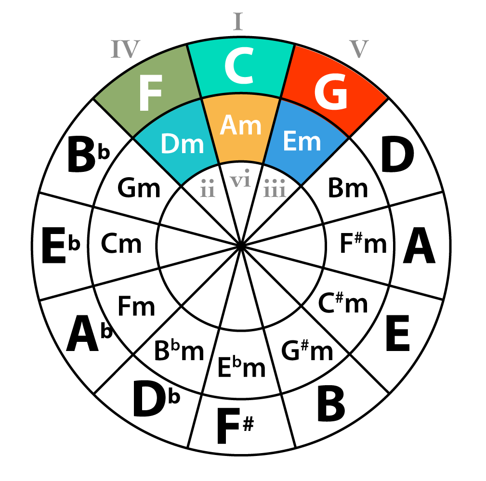

HitMaker is a chord generator that gives music creators a tool to get inspiration harmonically from BillBoard Hits. Given the mood and energy the user is going for, it could spit out MIDI files of the chord progressions that reflects the input.
It is based on the mcgill-billboard dataset which has hundreds of billboard hits and their chord progression.

Here’s a quick look of what it does. There are two sliders which control the target mood and energy. The four buttons below them control the output location, generate chords, preview, and stop preview. As shown in the video, the generated midi could be imported into DAWs with additional information of time signature and tempo.
There are intrinsic connections between the emotion of music and its harmonic component. With this project, I want to delve into the harmonic paradigms of pop music and explore that connection.
The dataset I chose contained accurate chord progression and I just need to quantize its emotional value to create a mapping. For this task, I used Spotify's valence and energy estimation. By searching the song name with Spotify's API, I was able to retrieve its track ID and other song data.
One of the bigger challenges was to convert chord progression (in string format) to midi files. While python's music21 library provides easy methods to write notes to a midi file, there wasn't a function that directly deal with chords. To get around this, I implemented a parser that break down any chord (e.g. Amin9#11) into the root (A), and other notes represented as the root transposed by intervals (m3, P5, m7, M9, aug11 in this case.)
Overall it has a straightforward design that resulted in a reliable and efficient app.
Download Link